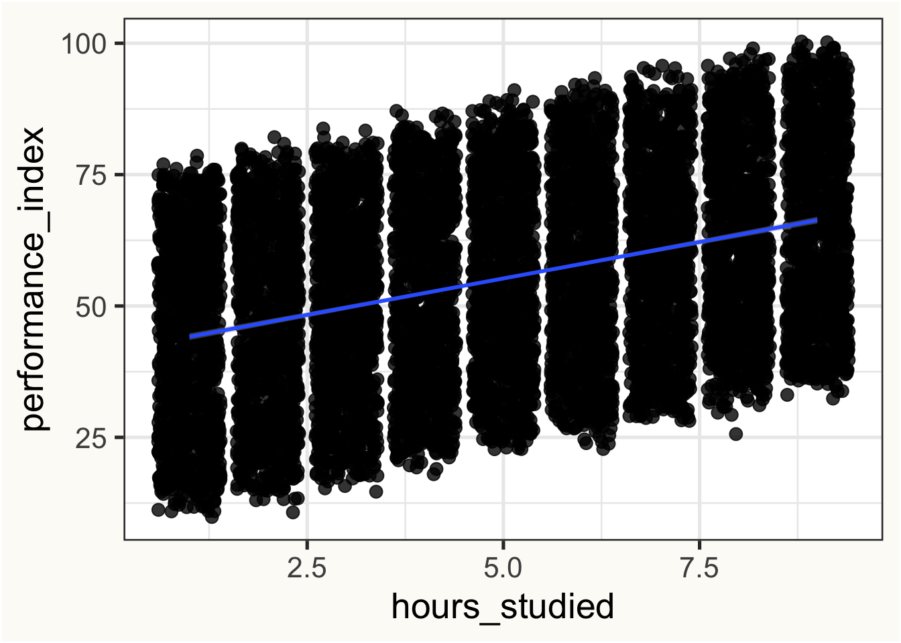

library(nanoparquet, include.only = "read_parquet")
library(dplyr)
library(ggplot2)
theme_set(theme_bw(base_size = 20))Introduction
It’s been two years since I’ve taught intro to stats to the incoming grad students in the Psychology department at UC Davis, and it’s probably the only thing I really find myself missing about graduate school. One of my favorite parts of teaching was the fact that I got to revisit the basics of statistics every year. It was a chance to look at the foundations through the lens of whatever I had learned in the past year. My day-to-day job as a data scientist doesn’t often involve re-visiting the basics, nor does it frequently involve thinking about or fitting any statistical models, and I miss that too.
I don’t miss writing as much, but I suppose that I miss that too.
With that in my mind, I intend to write a series of short blog posts covering the basics with the intentions of brushing up on the basics, hopefully colored through my now earned industry experience. Eventually I hope to get to writing posts as a form of learning and retaining new topics. Until then though…
“Simple” linear regression - What are we saying here?
It can often be the case that you have some data that describes two continuous variables, and you want to know something about how these variables relate. Or maybe, you want to be able to “predict” the value of one variable given that you know the value of another. In either case, most students are taught to invoke the ancient ritual of simple linear regression in order to one or both of these goals.1
We will solemnly abide by statistical tradition and call our two variables continuous variables \(x\) and \(y\).
Linear regression starts with the eponymous idea that each \(x_i\) can be linked to each \(y_i\) through a linear relationship of the form
\[ y_i = \beta_0 + \beta_1 x_i \]
This might seem trivial, but I always think it’s worth taking a moment and just thinking about what we’re saying here - we that there we can determine a value of \(y_i\) if we know2:
- a starting point – \(\beta_0\)
- a data point \(x_i\) that we multiply by some number – \(\beta_1\)
- The summing (1) and (2)
The equation above expresses a deterministic relationship – only the 3 quantities on the right hand side of our equation are need to determine the a given value of \(y\).
However, most things that are interesting enough for people to study them are more complex than that. There is probably more than just \(\beta_0\), \(\beta_1\), and \(x_i\) affecting our observed value \(y_i\). As long as we don’t think there’s anything else systematically affecting \(y_i\), we can attribute anything else affecting our observed \(y\)’s through to randomness.
\[ y_i = \beta_0 + \beta_1 x_i + \varepsilon_i \]
The updated equation includes a random deviation \(\varepsilon_i\), which captures .
Example
performance_df <- read_parquet("data/processed/student_performance.parquet")
glimpse(performance_df)Rows: 10,000
Columns: 6
$ hours_studied <dbl> 7, 4, 8, 5, 7, 3, 7, 8, 5, 4, 8, 8, 3…
$ previous_scores <dbl> 99, 82, 51, 52, 75, 78, 73, 45, 77, 8…
$ extracurricular_activities <fct> Yes, No, Yes, Yes, No, No, Yes, Yes, …
$ sleep_hours <dbl> 9, 4, 7, 5, 8, 9, 5, 4, 8, 4, 4, 6, 9…
$ sample_question_papers_practiced <dbl> 1, 2, 2, 2, 5, 6, 6, 6, 2, 0, 5, 2, 2…
$ performance_index <dbl> 91, 65, 45, 36, 66, 61, 63, 42, 61, 6…ggplot(performance_df, aes(hours_studied, performance_index)) +
geom_jitter(size = 3, alpha = 0.8) +
geom_smooth(method = "lm") +
theme(plot.background = element_rect(fill = "#FDFBF7"))`geom_smooth()` using formula = 'y ~ x'
model_hs <- lm(performance_index ~ hours_studied, performance_df)
summary(model_hs)
Call:
lm(formula = performance_index ~ hours_studied, data = performance_df)
Residuals:
Min 1Q Median 3Q Max
-37.564 -15.244 -0.152 15.529 35.756
Coefficients:
Estimate Std. Error t value Pr(>|t|)
(Intercept) 41.37917 0.38712 106.89 <2e-16 ***
hours_studied 2.77306 0.06883 40.29 <2e-16 ***
---
Signif. codes: 0 '***' 0.001 '**' 0.01 '*' 0.05 '.' 0.1 ' ' 1
Residual standard error: 17.82 on 9998 degrees of freedom
Multiple R-squared: 0.1397, Adjusted R-squared: 0.1396
F-statistic: 1623 on 1 and 9998 DF, p-value: < 2.2e-16